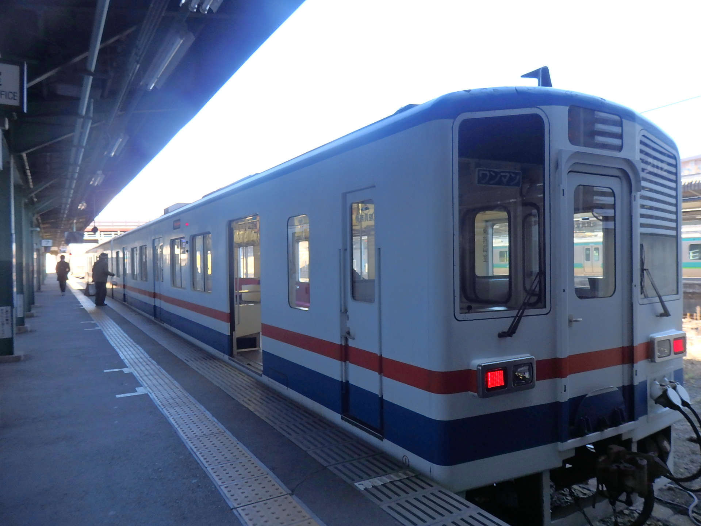
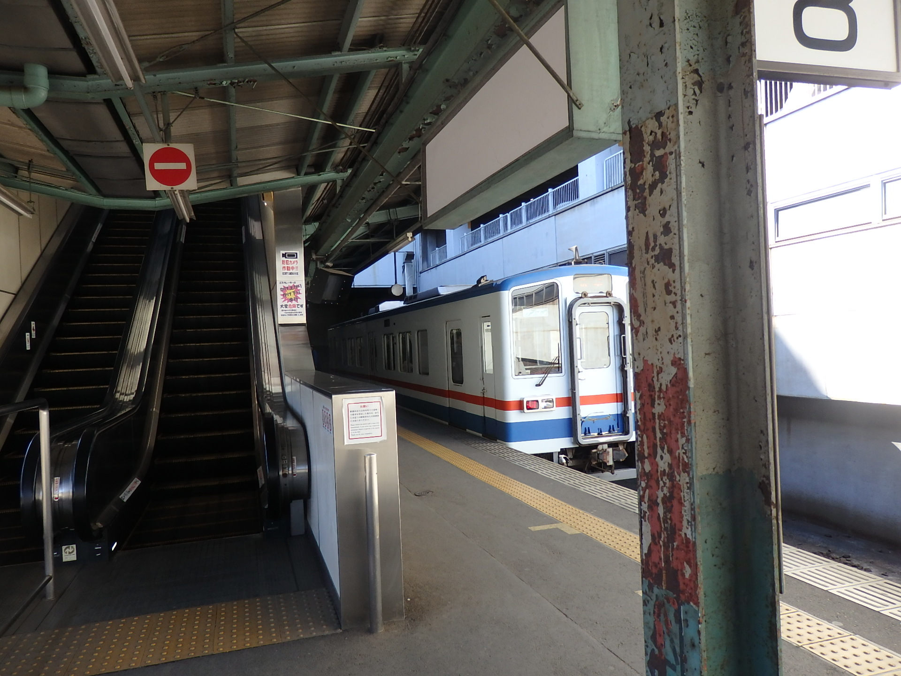
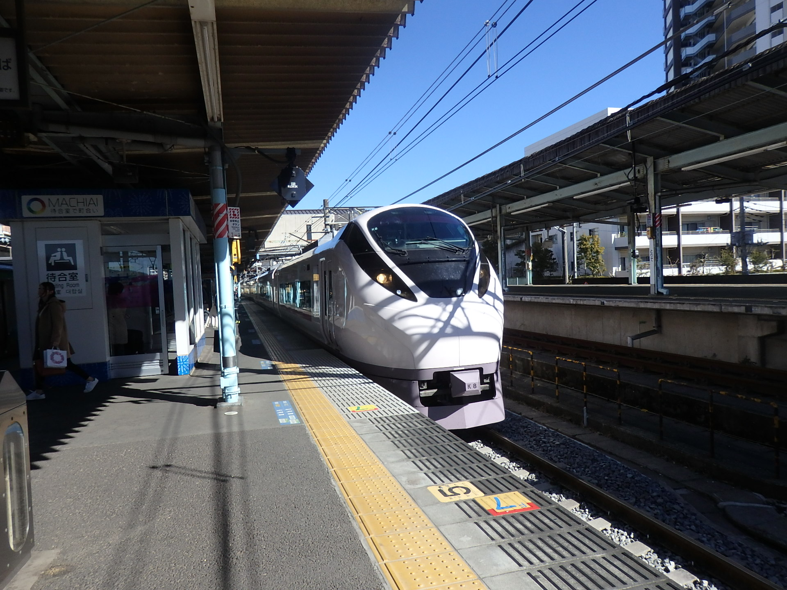

| 取手駅（関東鉄道） |
|---|
| 配線・ホーム配置 | 一面二線 |
|---|
| 割当番号 | ７・８ |
|---|
| のりかえ | JR常磐線快速
JR常磐線各駅停車（千代田線直通） |
|---|
| （始発駅） | 関鉄常総線 | →西取手 |
|---|
| 天王台 | JR常磐線快速 | 藤代 |
|---|
| 天王台 | JR常磐線各駅停車（千代田線直通） | （終着駅） |
|---|
|  |
| ７番線ホームに停車中の列車。 |
|  |
| ８番線ホームに停車中の列車。 |
|  |
| 取手駅を通過するJR常磐線E657系特急列車。 |
取手駅は、関東鉄道常総線の始発駅である。JR常磐線にとっても主要な駅である。そのくせに特急ひたち・ときわ号は通過である。なぜなんだ。
ホーム番号はJR常磐線各駅停車に１・２番線、JR常磐線快速に３～６番線、関東鉄道常総線に７・８番線が割り当てられている。
発車案内はディスプレイで行われている。日中は殆どの列車が各駅停車水海道行きとなっており、水海道から先の下館方面は水海道で乗り換えることとなる。
一覧に戻る